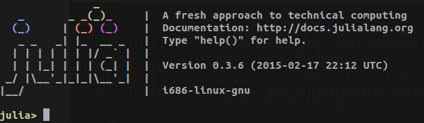

Introduction to Julia tutorials at the IoA
March 16, 2015

I ran an introduction to Julia for students and staff at the IoA. This consisted of a ~20 minute introductory talk, followed by an extended tutorial. The talk covers the following:
- What is Julia?
- How can you use it at the IoA?
- What is it good for?
- What is it not so good for?
The tutorial covers how to use Julia, especially the syntax differences that are likely to trip up astronomers coming from Matlab, Python, or IDL. There are three simple exercises included in the tutorial.
I wrote the talk, tutorial, and exercises using the IPython Notebook (a.k.a Jupyter), so you can view them online or download them if you want to go through any of the material.
You can see the notebooks online in nbviewer:
- talk (or as a slideshow),
- tutorial,
- exercise 1,
- exercise 2,
- exercise 3.
You can also get the source code from GitHub and run them yourself.
One final link that may be of use is Juliabox, an online version of the IPython/Jupyter/IJulia notebook. You can load the above notebooks into Juliabox by syncing the GitHub repository found at the link above, although not all the code will work (for example, JuliaBox does not have astropy installed).